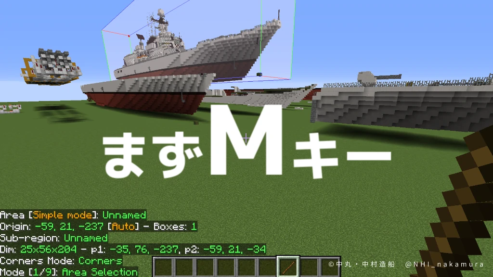
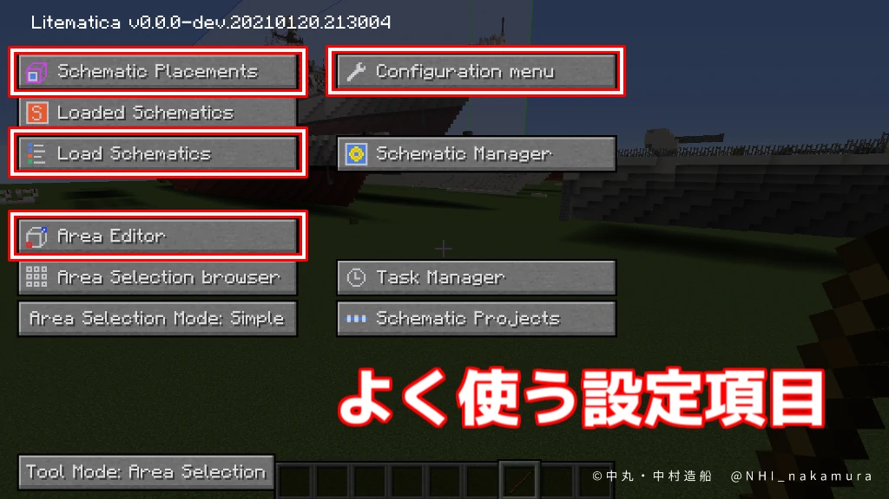
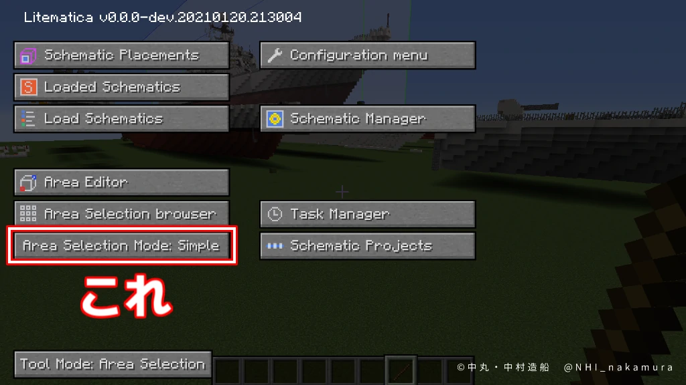
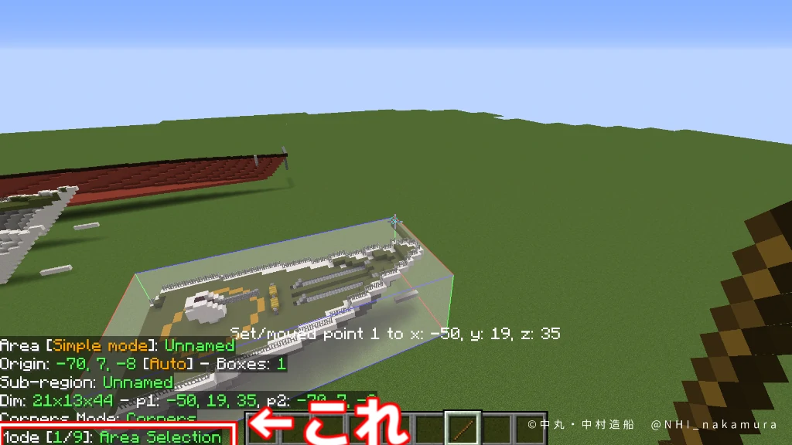
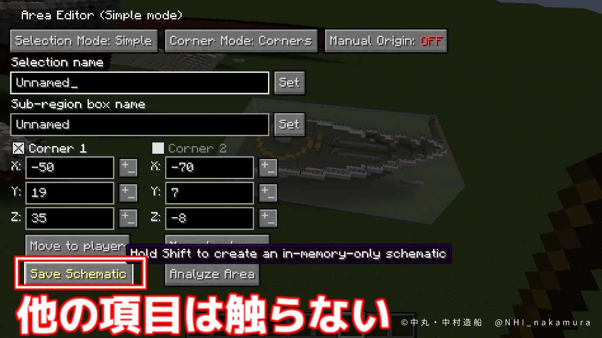
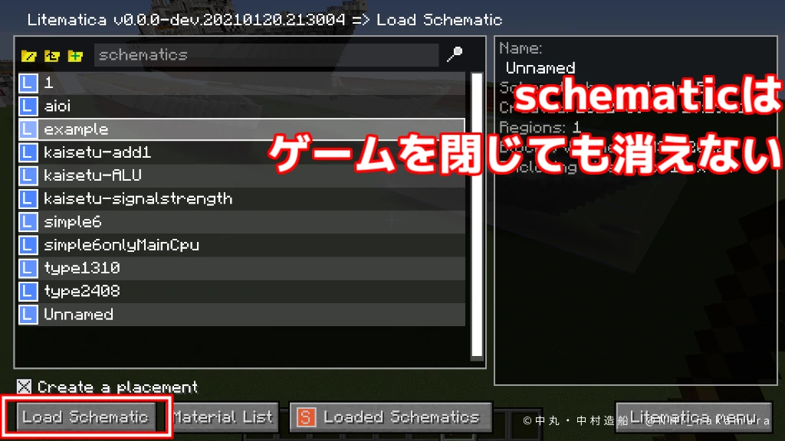
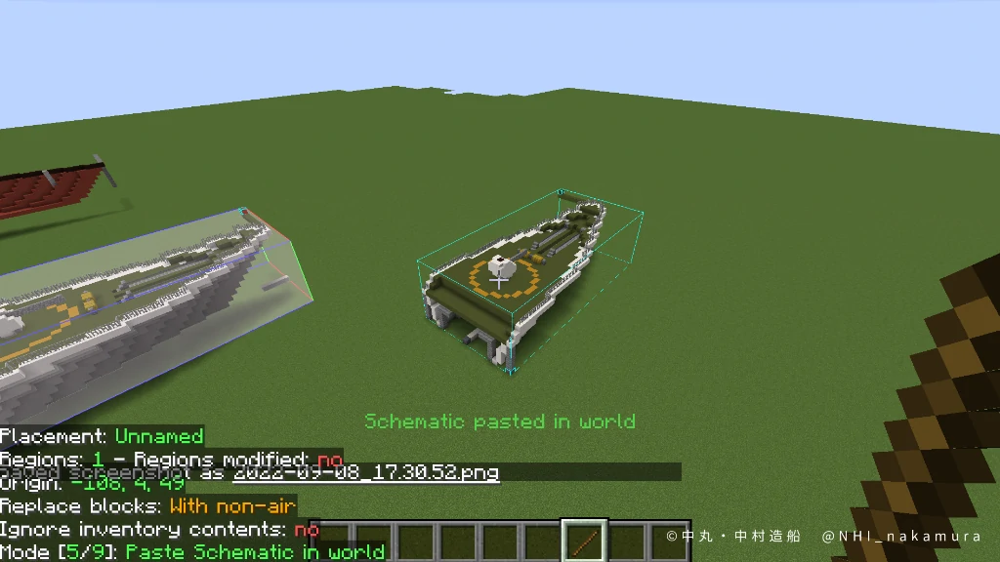
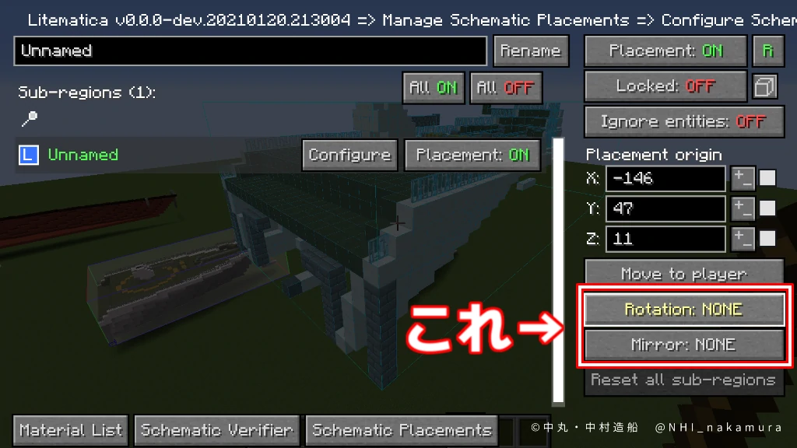
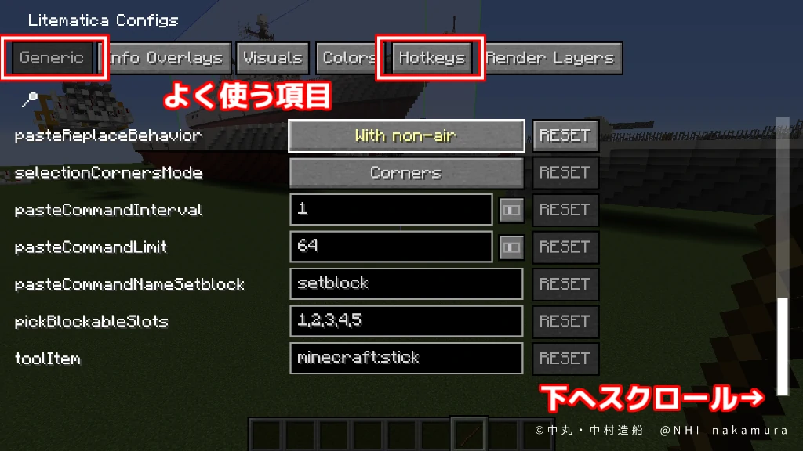

Litematicaはコピペ、反転、移動等の操作をゲーム内で行えるMODである。バージョン1.7.10で活動していた時はコピペや反転等にMCEditを、ゲーム内での移動にHACを駆使していた。バージョン1.16に移行するにあたり、それぞれの代替を探していたところ、どうやらこのLitematicaで事足りそうだと思い導入した。
この記事では、MCEditユーザーが多用していたであろう、コピペ、反転の操作を解説する
2022/09/08 画像を追加しました。読みやすいように画像を小さくしているので、拡大するなら画像を新しいタブで開いてください
初期設定
まずやっておかないと、まともに使えないレベルの設定。このMODの初見殺しポイント。
executeOperationキーの設定
ペーストや削除、Fill等の操作を「実行」するキーを設定しなければならない。これを設定しないと何もできない。
-
Mキーでメニューを開き、右上のConfiguration Menuをクリック


- Hotkeysの中の、executeOperationがNONEになっているので、そこをクリックしてから割り当てたいキーを押下。今回はEnterキーにしてみた。
- Escキーで戻れる。
Area Selection Mode: simple
右クリックと左クリックでそれぞれ範囲の両端のブロックをクリックすることで範囲選択できるようにする。初期設定では座標指定でしか選択できない。
- Mキーでメニューを開き、左下のArea Selection Mode: normalをクリックしてsmpleにする。

基本的なコピペ（保存可、ワールド跨ぎ可）
選択範囲に名前を付けて保存する方法。これならワールドを跨げるし、ゲーム再起動後でもペーストできる。しかし、操作が煩雑。なお、schematicという用語が登場するが、これはMCEditやAmuletで扱う物とは違う。
コピーの基本的な操作
- 木の棒を持つ
-
ctrl+マウスホイールでarea selection にして、左右クリックで範囲選択する。

-
Mキーでメニューを開き、Area Editor からSave Schematic

- 名前を付けて保存する
ペーストの基本的な操作
- ctrl+マウスホイールでPaste schematic in worldモードにする
- Mキーでメニューを開き、Load Schematics
-
先ほど保存したデータがあるので、選択して、左下のLoad Schematicをクリック

- するとUIの裏でプレビュー（schematic placementと呼ぶ）が表示されているので、EscでUIを閉じる
-
地面をクリックしたり、alt+マウスホイールで前後移動する
-
Enterキーでペースト実行

- すると、青い枠線が残るので、最後に、Mキーでメニューを開き、Loaded SchematicsからUnloadでプレビューを消す。
ペーストするときに回転、反転する
-
上記3番でloadした後、Mキーでメニューを開き、
Loaded Schematicsからloadしたいものを選択して、画面下のメニュー画面左上のSchematic Placementsをクリック - Configureをクリック
- 画面右下あたりにRotationとMirrorがある。ちゃんとリピーターの向き等も反転する。

やっておきたい設定
デフォルト設定のままペーストすると、ペースト先にブロックがあった場合に置き換えられない。つまり、船を海ワールドに移動すると水面下が消滅する。そこで空気以外は元のブロックを置き換えられるように設定るする。
- Mキーでメニューを開き、右上のConfiguration Menuをクリック
- Genericの下の方にある、pasteReplaceBehaviorをWith non-airにする。

簡単な1クリックコピペ
Litematicaの真骨頂であるが、メニュー上に無いのでショートカットキーでしか操作できず、しかもデフォルトでショートカットキーが設定されていない。こんな便利機能をなぜ全力で隠すのか。
まずキー割り当て
- Mキーでメニューを開き、右上のConfiguration menuから設定画面へ
- Hotkeysの中の、cloneSelectionの欄がNONEになっているので、クリックしてから割り当てたいキーを押下。今回はctrl+Cにしてみた。
- ついでに、一番下にあるunloadCurrentSchematicにもキーを割り当てておく。今回はdeleteにした。これでプレビューを消せる。
使ってみる
- ctrl+マウスホイールでArea selection にして、左右クリックで範囲選択する。
- さっき割り当てたキー（今回はctrl+C）を押す
- すぐにプレビューが表示されるので、位置調節してEnterキーでペースト実行
- deleteでプレビュー削除
これならメニューを開かなくてもコピペできる
その他の操作
基本的な操作は変わらず、モード選択＞範囲選択＞実行（今回はEnterキー）となる。
Delete
上記の通り
Fill
埋めたいブロックを目の前に用意してそれに視点を合わせ、Alt+マウスホイール押し込みで選択。Airを選択したいときは空を見る。
Replace block
無くなってほしいブロックに視点を合わせてShift+マウスホイール押し込みで選択。次に埋めたいブロックに視点を合わせてalt+マウスホイール押し込みで選択。
Move
ConfigでselectionGrabModifireにキーを設定しておく。（今回はEnter）
範囲選択し、Enterを押しながらマウスホイールを転がして移動する。
※動作不安定